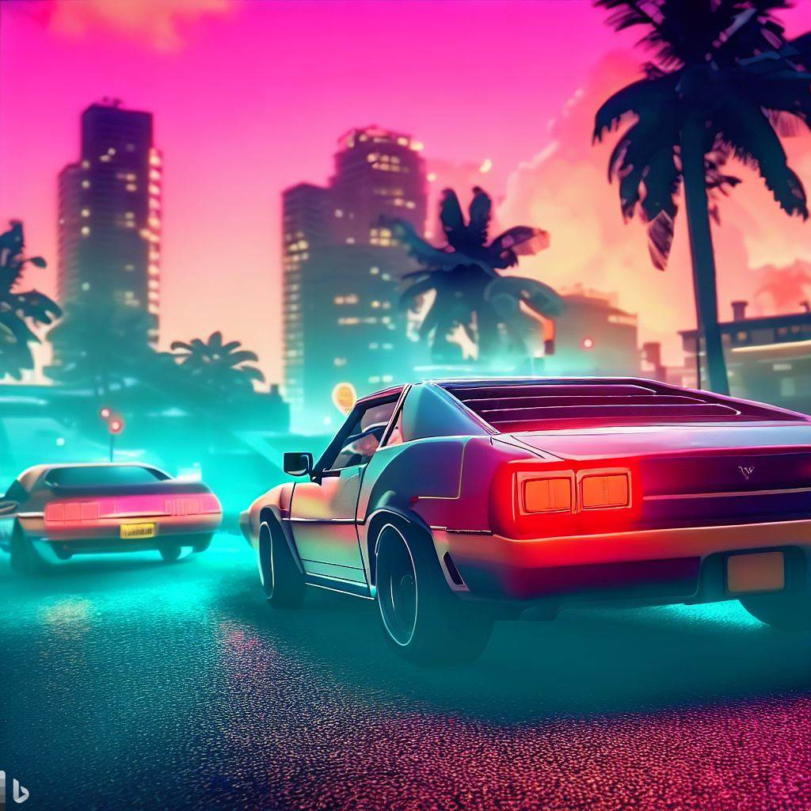
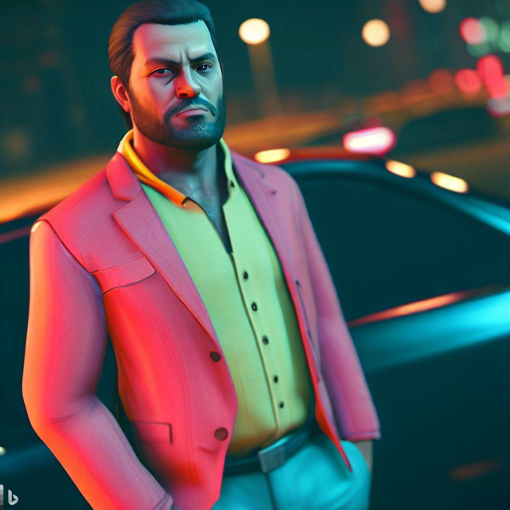

O grze GTA 6
Grand Theft Auto VI (GTA 6) to nadchodząca gra wideo z otwartym światem akcji i przygody, stworzona przez Rockstar North i wydana przez Rockstar Games. Gra jest w trakcie produkcji i na razie nie ma oficjalnej daty premiery. Mimo to, wiele plotek sugeruje, że gra będzie się odbywać w fikcyjnym mieście Vice City, które jest oparte na Miami, a także w fikcyjnym stanie południowej Florydy.

Przecieki i plotki
Pomimo braku oficjalnych informacji na temat gry, wiele przecieków i plotek sugeruje, że GTA 6 będzie miało jeszcze większy otwarty świat niż GTA 5, a także nowe funkcje, takie jak możliwość kupowania nieruchomości i prowadzenia własnego biznesu. Plotki sugerują również, że gra będzie miała tylko jedną główną postać, a nie kilka, jak w przypadku GTA 5.
Ciekawostki
- Według plotek, Rockstar Games zatrudniło specjalistów ds. sztucznej inteligencji, aby ulepszyć zachowanie postaci niezależnych i poprawić realizm świata gry.
- Według kilku źródeł, produkcja gry rozpoczęła się już w 2014 roku, zaraz po premierze GTA 5.
- Rockstar Games nie udzieliło żadnych oficjalnych informacji na temat gry, ale wiele osób oczekuje, że gra zostanie wydana na konsolach nowej generacji, takich jak PlayStation 5 i Xbox Series X.